Detailed Description
Aims
The aim of this project is to create an enjoyable game that will encourage users to be active. To achieve this, we will create a role-playing game, as this will keep the user coming back until they have completed the story, and the numerous side quests that will be in the game. We will also use augmented reality as part of this game, encouraging people to move in real life, to make progress in the game. Furthermore, exercise tracking technologies such as fitbits and other wearable tech items will be able to be used to further extend the links between the game and reality. Finally, there will be a multiplayer aspect to the game, encouraging users to play it with their friends, and therefore derive more enjoyment from the exercise aspect of the game.
To ensure that users play our game for a long time, it will be a role-playing game. This means that users will enjoy the story and want to complete it, and therefore will keep coming back to the game. This in turn, means that they will stay active, achieving the primary goal of the game. However it also means that we need to ensure that the story is engaging and fun, and that the gameplay mechanics that are used in the story are enjoyable, otherwise the user may not want to continue playing, if the game is too difficult or too repetitive.
We will also implement augmented reality into this game. This will be achieved by using a real-world map as a map for in-game locations, and having landmarks, such as shopping centres and parks, be in-game locations like shops and dungeons. This means that users have to travel to make progress in the game, either to go to a shop and obtain items, or to go to a dungeon to complete quests. This will be crucial to ensuring that this game makes users active.
Furthermore, to allow users to use their activity to make progress in the game, we will implement the ability to use activity trackers such as fitbits and apple watches to track activity when the user is not playing the game, and use that activity to make progress on quests and various other things in game. This makes it easier for users to make progress in the app, even when they aren’t actively playing it, making it more enticing as an exercise related app.
Finally, the implementation of multiplayer aspects into the game will encourage users to play with their friends, which will make them more likely to continue playing the game for longer as they will have the incentive of being the best player in their friend group, and will make them more likely to enjoy the exercise aspect of the game, as everything is more fun with friends.
Plans and Progress
Initial Concept
The initial concept for this game came from a former member of our group called Angus Brown. It can be seen over on his website from assignment 1 at: https://angusbrown22.github.io/COSC1078A1/Project.html
His initial concept is very rough, explaining the core mechanics of the game and some information on the tools, technologies and skills required to create the game. We then did research and expanded on this concept more during the course of A2.
Development
We developed this game through a series of group discussions, where we would focus on particular aspects of the game, for example how a battle would occur, and all suggested different concepts and ideas of how the aspect we were discussing would work, until we decided on which one we as a group liked best. We then moved on to another aspect. We also assigned Mark, Kenneth and James the roles of designing the art and graphics of the game. They discussed ideas among themselves and came up with designs for characters, items and other aspects of the game. We also very quickly agreed upon the name ‘LifeQuest’ for the game, as suggested by James.
Coding the game
LINK TO PLAYABLE BATTLE SCENARIO USING PYTHON
style="text-align:left;">The idea for creating the game was to design a functioning battle scenario using Unity, the group had no experience using Unity, so group member Oscar volunteered to try and learn how to develop this game using unity. Firstly, the HUD For the battle scenario was created depicting a statement like “You have encountered an Enemy'' and to the right of that were options ‘Fight’ and ‘Flee’, a Pokémon text box was used as a placeholder before the art team developed an original HUD. 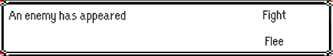 This was just a visual aid, the plan was to make the ‘Fight’ and ‘Flee’ option selectable and they would open new selectable options. Before this process was worked on, a background, character and health bar were added. The background used was a placeholder from Final Fantasy, that was going to be replaced by a background created by the art team, the character health bars were just coloured boxes and text, this was also a place holder. From here the scripts must be added to the text to allow them to be selectable. 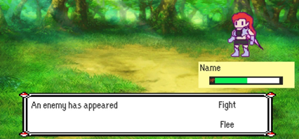 This is were a major obstacle was placed in front of us, being unfamiliar with unity, Oscar did not know that the coding was done using C#, a language that he and the rest of the group was unfamiliar with. To try and grasp as much information as possible in the short time we had, he tried researching the similar games done in unity, he stumbled across a person remaking a Pokemon game in unity, which contains a similar fight scenario to our game. (Link to Pokemon Youtube tutorial) . After watching many of these videos, created by Game Dev Experiments, and trying to implement the code shown in the videos to our battle scenario, it was made very clear that without a prior understanding of C# that it would be unfeasible to create a functioning and good battle scenario that our game depicts. Furthermore, we did not want to be plagiaristic and just completely copy Game Dev Experiments code and just change the images and animation to fit our game, as that is unethical and there is no learning that comes from that.
style="text-align:left;">Ultimately, the idea of creating a battle scenario in unity was scrapped, but the group still wanted some sort of interactable prototype that a user could play with to understand how the battle scenario would work in this type of game. So again, Oscar would work on creating this, instead of unity, a text based version was going to be created using Python, a language our whole group was familiar with. The battle scenario for this game was condensed into one ‘While loop’ that would always run so long as the player’s or enemy's health was above 0. 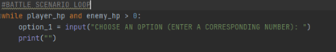 Within this loop there were multiple if and elif statements that gave the user various options when fighting an enemy. The first set of options to pick from were attack, inventory, recharge mana and flee, from which more options were available, except for flee as it ends the battle. Attack gives the player a list of 4 attacks to choose, each attack requires a specific amount of mana based on the amount of damage. This is where an obstacle arises, as doing damage to the enemy and the enemy damaging the player were in the same ‘if’ statement, meaning that both the enemy and player attack at the same time, potentially leaving both of them to be defeated. In order to remedy this, an new ‘if’ statement was created allowing the enemy to attack only if its hp was above 0, which created a turn based system rather them both attacking at the same time . Another problem that arouse was that when a player used a health potion in the inventory it allowed their HP do go above 100, after consulting the group, Mark gave the simple answer of inserting a line of code into the ‘if’ statement stating when the players hp is above 100, always set the value to 100.
style="text-align:left;">After the main crux of the battle scenario was completed, such as the move list, enemy doing damage, inventory created and mana recharge option complete. There was just some minor quality of life improvements to add, such as if the user does not enter the correct option it gives them the message “Enter the corresponding number” and also adding little features such as the amount of mana each attack requires. Overall, the battle scenario was clearly portrayed in a text format using python, after many hurdles and obstacles, the playable prototype was completed.
Gameplay
Characters
LifeQuest has 4 main classes, all of which correspond to traditional RPG class types. There is the mage which is a ‘glass cannon’, a class that deals lots of damage, but is fairly weak if attacked and can quickly be defeated if damaged too much. There is also the white mage, a typical healer or support class, that is able to protect its party members and itself. The white mage also has some damage dealing abilities, but they are not particularly strong. There is also the warrior class, a traditional tank. This class has a lot of health and is very difficult to kill, but does not do a ridiculous amount of damage and does not have any support abilities. Its role is effectively to take hits so that other classes can do the damage to win the battle. Finally, there is the fighter class. This class is a middle ground class, it is not as difficult to kill as the warrior, but is more difficult to kill than the mage, and it does not do as much damage as the mage, but it does more damage than the warrior. These classes are differentiated by what kind of weapons and armour they use, with fighters and warriors using physical melee weapons, and both types of mages using magic attacks. The mages wear stereotypical cloaks and capes, whereas the warrior and fighter were more traditional armour.

 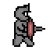
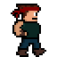
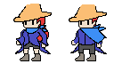
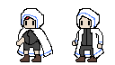
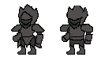
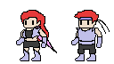
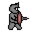
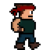
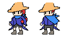
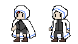
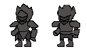
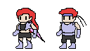
Overworld
The overworld of LifeQuest is the real world, the map that the game follows will be a simplified version of the world akin to Pokemon Go’s map, major landmarks important to the game will appear as flat textures on the map, these textures represent anything from shops, to dungeons, and even inns for the player to sleep in. For our game, the “safe house” for the player can manually set the address themselves so they can save their game at their actual house. While walking in the overworld, the player will have random encounters, in which they will fight an enemy of some type. Dying during a random encounter will force the player’s gear to lose its durability and they will be kicked out of the battle. The player will also be able to battle in dungeons to earn rewards, however dying while in a dungeon will automatically kick the player out of the dungeon, they earn no rewards, and lose more durability than is lost for losing a random encounter, yet their position will remain at the dungeon. Music has been created for the overworld of the game (music for other portions have yet to be finished), it is below this description, while the song itself is short, it is a looping song, it loops from the end of the track to the end of the Flute section.
Random Encounters
Random encounters will be encountered every 1000 steps that a player takes while the game is open. They will involve fighting a fairly weak enemy, relative to the player's level, and the player will get rewarded with a small amount of currency for defeating the enemy. Players will be able to flee from random encounters if they do not wish to fight them. Below is an example of a random encounter enemy.
Here is a design for an enemy: a Scarf Dragon! (Also goes by MrStealYoScarf)
The Scarf Dragon is designed to be (mostly) an easter egg type of enemy and is commonly located around clothes stores, and the further away it is located from one, the faster its speed (see: priority) is and the more likely it is to flee after a turn has passed to suggest that MrStealYoScarf is turning tail (;D) with the store's scarves. If the player uses anything that is flame related on it, an animation for the scarf burning will play and the dragon will either give up the fight and let you finish it or flee immediately due to the speed increase from losing the scarf. If it manages to flee (read: low possiblity), there is then a chance for the player to encounter the parent dragon. This part wasn't able to be animated and designed due to time constraints. The dragon is super careful with its own flames so it would never burn its scarves. In fact, the reason it steals scarves is for warmth in order to grow to maturity. Why scarves instead of any other clothing item? Because scarves are stylish (and cool to sprite) and loosely inspired by Greninja.
Below is the what the player sees when first encountering the dragon, with the second image being the final pose the dragon takes once it goes through its encounter animation.


The encounter animation shown below plays when the dragon appears on the UI, much like the Pokemon games. It remains unfinished. The tool used here, Piskel, removed the transparent background as there were too many hues and shades combined with too many frames.


What would need to be finished was the transition from the first/second gif to the third gif (the first and second gifs are the same, though the former is played at 1 frame per second while the latter at 11). The first/second gif will be henceforth named V1 and the third V2. V1 finishes as the dragon is turning to our right. What needed to be finished was animating its tail whipping back to look like that of V2 (think cat tail whips). The dragon's head turns to our left such that we see its side view, then opens its mouth to breath fire. In V2, the fire illuminates its face, tinting the planes that are facing the flame. Once the flame starts dying out, said planes are shaded darker until the hues look like V1.
Dungeons
Dungeons in LifeQuest will appear at landmarks in the real world (for example, the Eiffel Tower or the Sydney Opera House). These sections of the game boast tough bosses for the player to defeat, but reward the player with amazing gear to help them on their journey. The order these dungeons go by varies, but it is typically a handful of weaker mob battles, one or two minibosses, a handful of tougher mob battles, and then the big boss of the dungeon; this order may vary depending on the location of the dungeon. Failing to clear a dungeon (i.e: losing a battle) will result in the player being kicked out of the dungeon, the dungeon will no longer be available to the player and they miss out on the potential rewards they may have gotten. Being careful with your battles inside the dungeons will be what makes the difference between average gear and incredible gear.
Quests
Quests in LifeQuest are challenges for the player to complete, they can either be “Take care of this monster for us at [geographical location]!” or “Send this gift over to [geographical location] for me!”. These geographical locations will be specifically tailored to where the user is at that time, allowing anyone anywhere to have the same experience when playing the game. While these quests may be tedious, they will reward the player well for their efforts, as these quests will mainly require the player to walk over to the necessary location first before actually facing the enemy or sending off the gift. The rewards the player can receive could be either a better armour set, better magic tomes, more gold, better weapons, etc. this gives players the incentive to complete these quests and therefore improve their physical health.
Story
Side Story 1
In the real world, the player walks for 500 metres and they meet a fictional character named Jenna. In the game, the player walks past a dungeon and outside the dungeon, *the character* encounter a wanderer named Jenna
Jenna: Hello, *The character* My name is Jenna and I was given a task by my king to investigate these areas. When I was wandering around these areas, I found something unusual here. I think you can check it out, though I would suggest bringing more friends, but I think you can handle it yourself. Good luck.
*The character*: Why should I head in there?
Jenna: I heard the enemies in the dungeon are keeping a lot of valuable loot inside, so I think it is something that you would like.
*The character*: Alright, I’ll see what I can do.
Jenna: Good luck, *the character*
In the real world, the player can choose to wait for a few people to join him, once they too have already walked 500 metres or they can choose to do it alone. Once the player has already chosen their option, they can head inside the dungeon. In the game, *The character* heads inside the dungeon to find 3 enemies standing in the gate. *The character* then fights them off and heads inside the dungeon. Once the player heads inside the dungeon, they suddenly find a mini boss on the way surrounded by 2 other enemies. *The character* then fights them both off and head inside where the enemies have been keeping the treasure room, but before they can grab any of the treasure, a big boss showed up and *the character* fights the big boss to claim their reward. They fought the boss and they claimed their treasure. *The character* then leaves the dungeon, where they met Jenna again.
Jenna: Congratulations on slaying the beast. I think my kingdom might use someone like you to help us. Hopefully, we will be able to talk soon. Goodbye for now.
In the real world, the player would need to walk in a real life shop in their respective country to be able to access the in-game shop. In the game’s shop, you find a man named Marcus.
Introduction to the shop
Marcus: Hello *The character*. Pleased to meet you. My name is Marcus and I am a blacksmith who will be supplying you with items and if you ever need to resupply your armor, you can also head over to me and I will get you sorted in a jiffy. See you around and good luck on your travels.
Side Story 2
In the real world, the player would walk around for around 100 metres and in game, *The character* would stumble upon a stranger named Lily.
Lily: Hello *The character*I am looking for 3 mushrooms. Can you help me find them? My name is Lilly by the way
*The character*: Sure thing, Lily.
Lily:Thank you. I will keep looking around the area.
In the real world, the player would walk for around 50 metres in any direction and they would find one mushroom on the ground. Once the player has found all three mushrooms, they return back to Lily.
Lily: Have you found it yet?
*The character*: Yes
Lily:Thank you. Please take these as a thank you gift.
Side Story 3
In real life, the player would walk around 60 metres and in game, *the character* found a group of enemies surrounding a person. The enemies then found you and are rapidly approaching.
*The character*. *The character* then fights them and rescues the stranger. It turns out the stranger is a ballad for a bar.
Reckless Ballad: Thank you *The character*. I thought I was done there. Please take these for your troubles.
*The character*: Please be careful next time
Reckless Ballad: I will, but everytime I see an enemy, I just can't help myself and have to fight it. *Sigh*, I guess that is why I was called the “Reckless ballad” by my friends. Again, thank you for your help and I hope I can be able to solve my issue.
Inventory and Currency
This game will have a currency system using gold coins. These coins will be able to be gathered by completing quests and defeating dungeons and random encounters. These coins will be able to be used at shop locations to either buy new weapons and armour, upgrade existing weapons and armour, or buy new weapons and armour. Weapons and armour will be organised into multiple tiers, with higher tiers being more effective. Within these tiers there will be sets of armour and weapons, which will give bonuses depending on how many items in a set the user has equipped. Weapons and armour will also be differentiated by classes, with some items only being able to be used by particular classes, and some items being usable by all classes. These items, as well as being able to be bought from shop locations, will also be rewards for defeating bosses in dungeons, with more difficult bosses giving the player better gear as a reward.
 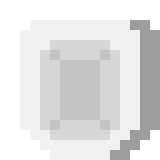
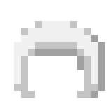
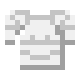
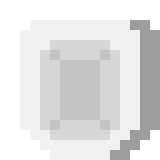
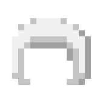
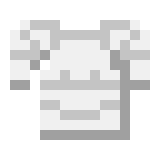


 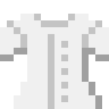
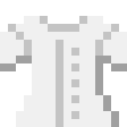
 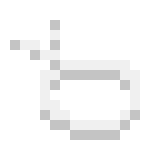
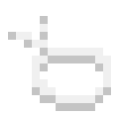
 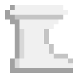
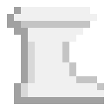

Weapons and Items
Other RPG games feature 'Equipment Sets', where each unique clothing item is designed with a theme. Wearing pieces of the set together grants bonuses that pertains to a unique playstyle that usually differs from the 'main' or intended playstyle of the character.
This set is for the black mage, and its theme is duality with the stereotypical light vs. dark trope. What springboarded the design process was the design of Archibishop Leucoryx and his items from Realm of the Mad God, which inspired the theme.
The set remains unfinished. The robe, which hasn't been finalised, is intended to be the crux of the set and would be designed to have a 50/50 left/right split between the light and dark elements. As it stands, the boots and hat resemble a 70/30 split between their respective light/dark representations.

 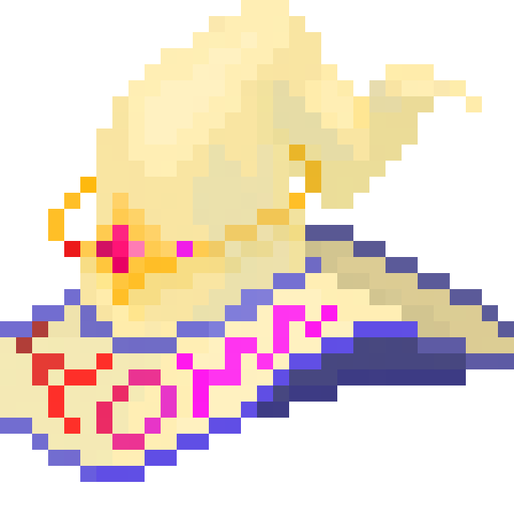
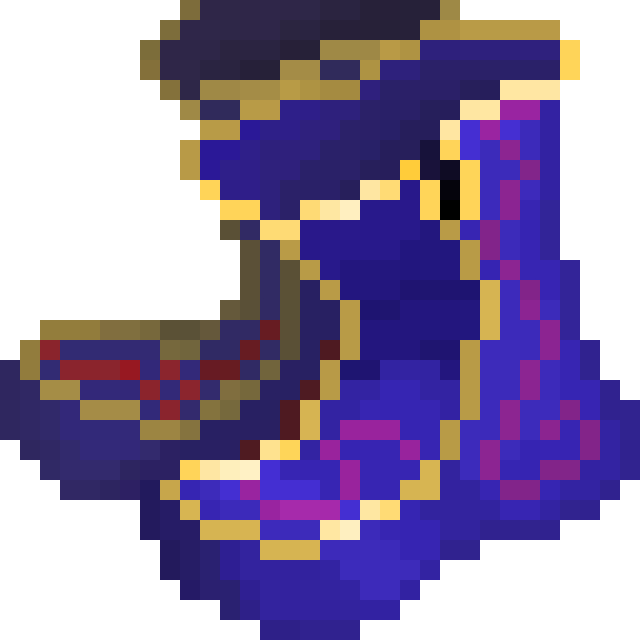
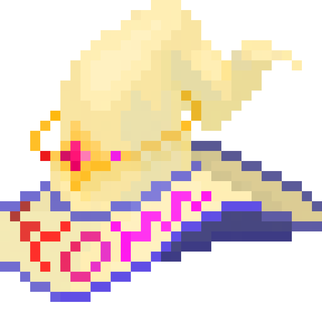
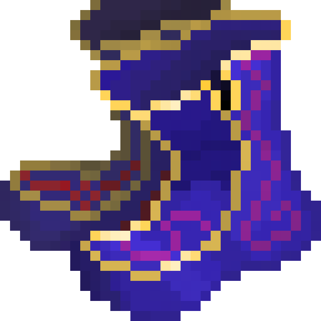
The staff was largely inspired by the tiered staves from Realm of the Mad God. The hat's silhouette is based off of League of Legend's Rabadon's Deathcap , with design elements such as the crown inspired by classic Viego's crown and Divine Coronation . The boot's silhouette is also from League of Legend's boots.
Only the effects of the staff and tome have been fully fleshed out:
Tome:
Gain access to passives and active only if at less than or equal to 50% hp.
Passives:
Adept:
[Spell potency] increased by 15%
[Spell potency: Spell power, buff strength]
Touch of the void:
After spellcast, deal 8% of all enemy's current health as shadow damage. (Capped at X for bosses)
Active:
Corrupt Ascension
All sources of [spell potency] amplified by 50%
Does not stack.
Not affected by [spell potency]
Lasts the next 2 turns.
Staff:
Gain access to passives and active only if at more than or equal to 50% hp.
Passives:
Trailblazer:
Gain 2 [Priority]
[Priority: Determines order in which entities take their turns. The entity with the highest priority takes their turn first.
Should there be a tie, order will be determined by Ally > Enemy, then by class: White Mage > Mage > Warrior > Tank]
Radiant Heart:
Before spellcasts, increase team [spell potency] by 10%.
Lasts this turn only.
Does not stack.
Active:
Splendor:
Deal light damage equal to 130% of your spell power.
[Spell potency] is twice as effective for this spell.
Roles
Art Department
Kenneth
James
Mark
Coding
Oscar
Mark
Report
Everyone
Website Formatting
Oscar
Josh
placeholder
Scope and Limits
Production of a game can be very tasking. It takes a full team of different aspects to fully flesh out a complete game and development might be costly.However,the building block of every game is of course the gameplay and rules that guides the player actions and its reaction.On a rudimentary level a game consists of interaction made within the world made inside the program. With limited resources, an end product of a complete game might not be achieved, but the entities that build a game can still be made and polishing the mechanics of a game is detrimental for a game's success. A game of a smaller scope would not achieve the same level of quality as a game produced by a company with a group of a larger scale with more time put into it.So its detrimental to determine the scope and design the game around the capabilities that is achievable among the group.With the given time, a reasonable achievement would be to finish the battle section of the game, as it is one of the most part of the game. The battles would be the most engaging ,giving a clearer picture what the gameplay will look like once the game is finalized. Having a clear gameplay feature will also give a chance for the group to present new ideas for the game moving forward to the game's target audience. This game is also aiming for AR implementation for the end product, however for this earlier version, Ar won't be applied as AR would take too long to implement and the group is not too well versed with AR technology,making it out of reach at the current time.
Tools and Technologies
For creating the website for the game, we used this application called Phantom. We chose this website, as we think the website’s template is perfect for showcasing our game, it’s features, the references and so on. As for designing the application, the designer will be using “Piskelapp” and in “Piskelapp”, the design team was able to create sprites, as well as, designing the enemies , as well as, their animations and their characters. For the combat of the game, we are going to be using Python, as a lot of us have some experience with Python due to previous experience, so using Python will be a good programming software for our game. Because our game requires physical data from the user, it will be a good idea to collaborate with some health applications to track the user’s heart rate, the calories burnt and many more. A good application is Accuro health and according to the website, we can be able to get watches that can track the user’s heart rate and more, instead of doing it on the phone and they offer free demos, as well. For creating the music for our game, we are gonna be using a software called Bandlab. Although, the music will be quite a small part of our game. We still want to include it during the combat part of the game. We will be using a UI software development kit called Figma and because a lot of us are familiar with the application due to previous experience, it will be a lot easier for us to use Figma for creating the UI or the user interface for our game. For communication with each of the members, we are using a mix between Discord and Microsoft Teams. Discord, because we think that Discord is a really good platform for exchanging messages between us and Microsoft Teams, primarily because of recording our meetings, where we talk about group updates, combat scenarios and many more.
Testing
pUser testing with users gathered from RPG game or AR game subreddits and discord groups. These users will be enticed to join the testing program through the promise of tester exclusive in game cosmetic items. Approximately 30 users will be used to test the first stages of the game, with potentially more people added as the testing process continues. This number will be limited to ensure that we as a group are not overwhelmed by the number of reports we get from the users, as our group is fairly small. Testing will be done through figma mock ups to start with, then moving into actual versions of the game once they start being created. The users will be given access to the mock ups and earlier versions of the game and told to check that every button in the application functions, and encouraged to do whatever they possibly can to break the game. This will allow us to find and correct any issues with the game, until there are no more issues. We will know that we have succeeded when the users who are testing the game no longer find any bugs and no longer have complaints with the games core mechanics, such as battles, quests and the main story line. Additionally, further into the games development, we will know that we are succeeding when there are no longer any issues with using the game on different operating systems (android/ios) or with using different fitness tracking devices (apple watch/fitbit/samsung gear).
Timeframe
placeholder
Risks
When developing a game there are always major risks that must be taken, sometimes you reap the rewards from these risks other times you must reformulate your strategy. A major risk that was taken was to use the software Unity for our game development, none of the group members were previously familiar with this software. When development of the battle scenario began on unity, it became very clear that without prior knowledge of the coding language C# that I would be extremely hard and unfeasible to create a strong and compelling battle scenario. The group decided that a text version of the battle scenario will be created using Python as we were all familiar with that language of coding.
Another risk was the choosing of the art design that would be the overall feel of the game, the design team decided that pixel art would be a great aesthetic for the game. Unlike the software chosen for the game, this one seemed to pay off, as it creates this nostalgic feel to other games such as Pokémon and Final Fantasy, especially with a similar combat style. It also allowed for a wide variety of members to work on the art as it is a bit simpler than creating hyper-realistic character, armour and weapons. But, it also created a sense of originality and uniqueness by pairing this art design with the concept of augmented reality, as it takes two complete opposites and merges them together.
But the major risk was choosing an RPG for the genre of game, simply because this genre has an unlimited amount of content that can be added, the options are endless. With a massive amount of ideas floating around, this is where communication can easily break down and conflicts of interest can arise. Thankfully, the group understood that because we can only focus on a small part of the game for the prototype, that we have to narrow in on the features that will be discussed. The group was very understanding of features that could not be added and no one took offense if a particular feature was too large to be added currently.
Group Processes and Communications
During the course of this project, we will use Discord to contact group members and arrange meetings. If a group member does not respond to messages in the groups discord server, they will be individually messaged by a member of the group, and if that does not work they will be emailed to their RMIT email. We will meet using Microsoft Teams, 3 times a week. This will allow us to keep up to date on what work is being completed often, and make adjustments to roles and workloads if necessary. The use of Microsoft Teams will also allow us to record these meetings for future reference. Files will be shared through Google Docs and Discord depending on the file size, as Discord only allows sending files with a maximum size of 8 megabytes.